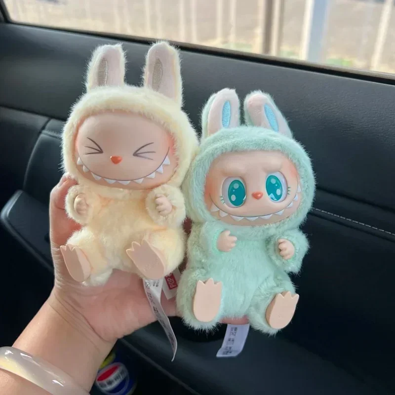

Labubu, Lafufu e Tribufu: a febre dos chaveiros que conquistou a internet
Se você anda pelas redes sociais, especialmente no TikTok e Instagram, já deve ter esbarrado com vídeos fofíssimos ou até hilários protagonizados por Labubu, Lafufu e Tribufu. Eles são os novos queridinhos da trend dos chaveiros, e não é difícil entender o motivo.
Quem são eles?
Labubu é o monstrinho mais conhecido do trio, criado pela marca POP MART. Com dentes pontudos, orelhas longas e expressões que variam do assustado ao travesso, ele virou sensação por seu jeito esquisito e fofo ao mesmo tempo. Lafufu e Tribufu são variações carinhosas (e inventadas pela criatividade popular) para se referir cópias inspiradas (falsificações) no Labubu original, o que alimentou ainda mais a brincadeira.
Labubu
Labubu é o monstrinho original, criado pela POP MART.
Lafufu

Lafufu réplica mais parecida com a original.
Tribufu

Tribufu um ar totalmente desengonçado. Sinônimo de réplica de baixa qualidade do Labubu.
Por que viraram trend?
Tudo começou com vídeos de pessoas abrindo blind boxes (caixas surpresas) e exibindo seus chaveiros do Labubu — alguns vibrando por ter finalmente conseguido o modelo raro. A partir daí, surgiram montagens, memes e challenges mostrando o trio em situações do dia a dia: " acha que é um labubu, quando é no máximo um tribufu", "eu e meus problemas: Lafufu e Tribufu", ou "tentando ser adulta mas com meus chaveiros fofos na bolsa".